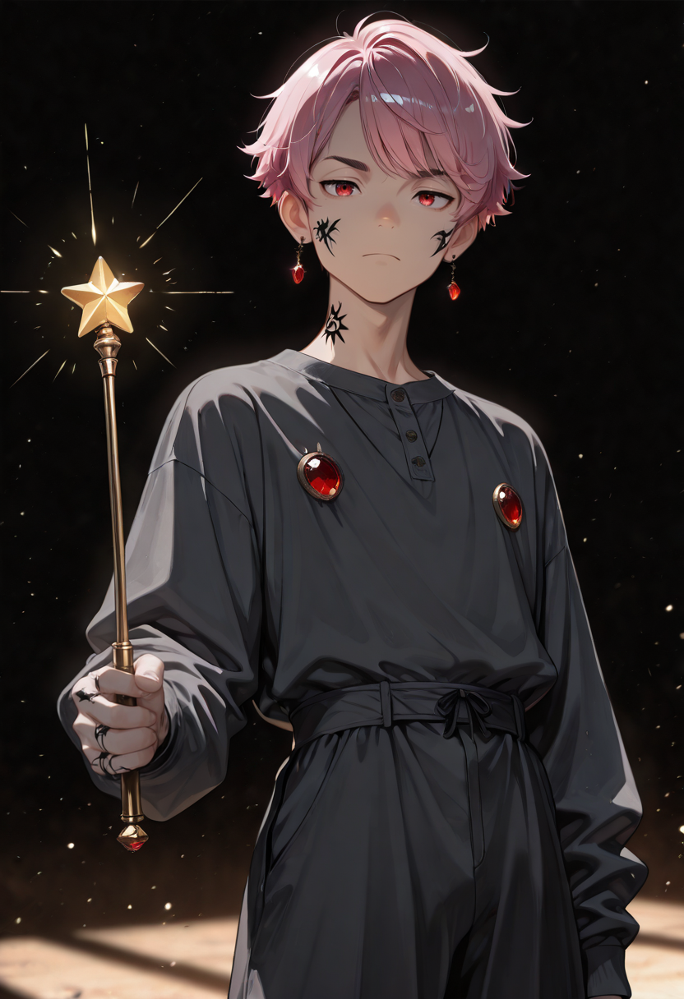
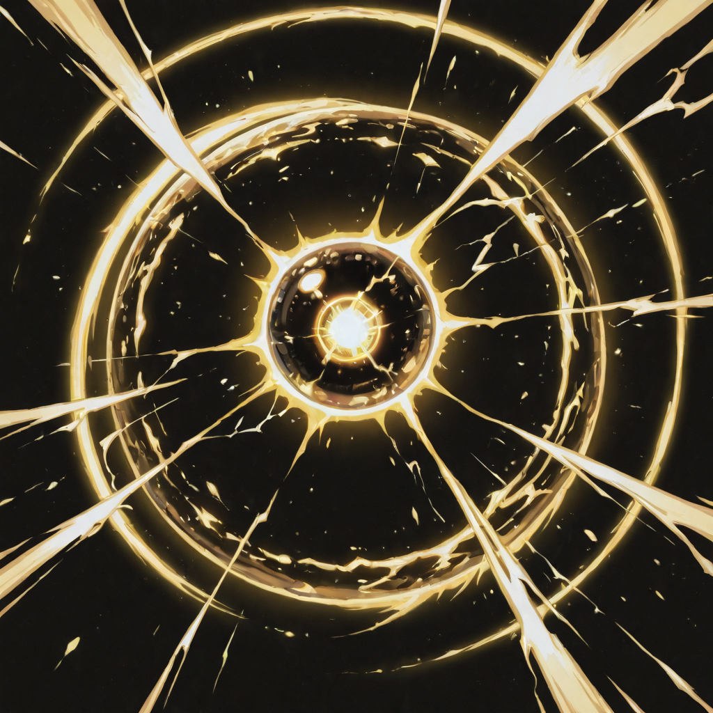
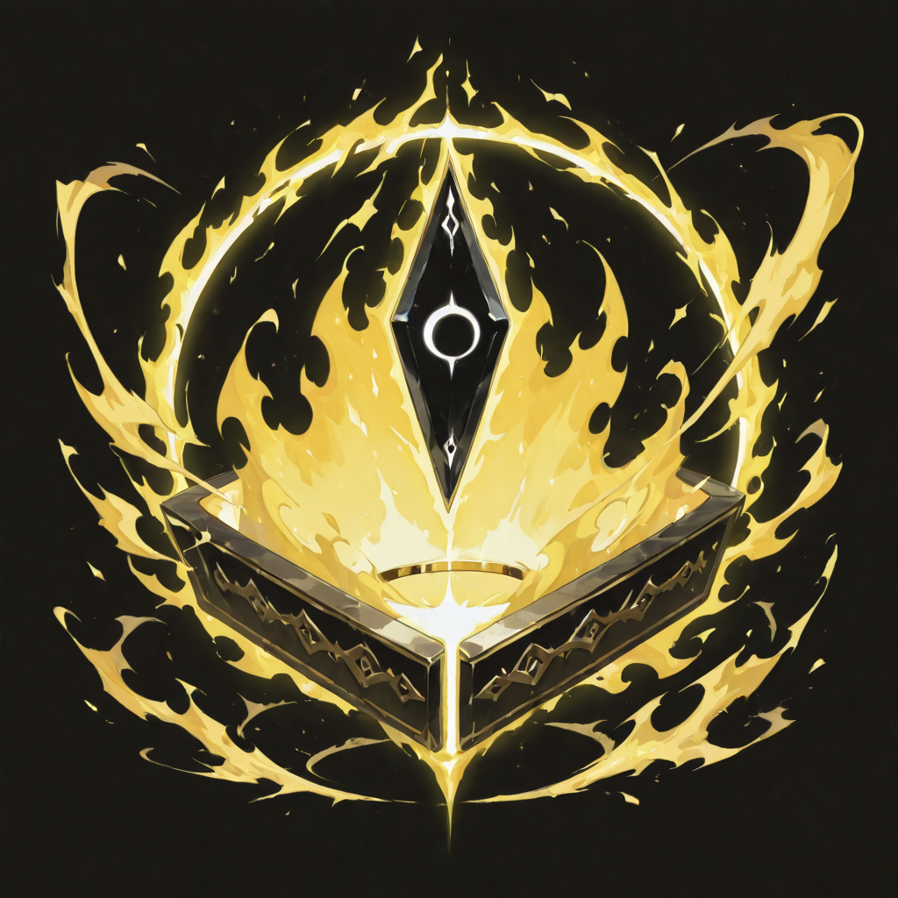

Light Through Broken Glass
The Corrupted Light Mages were once practitioners of benevolent luminomancy , practitioners of the healing arts, channelers of protective light, those who used radiance to reveal and defend rather than to destroy. Death , and Malicott's sap , inverted the polarity. The light they produce now cuts rather than heals. It diagnoses vulnerabilities rather than symptoms.
They do not experience this as corruption. They experience it as completion. The same light that once mended flesh now reveals the seams of armor, the gaps in resistance, the half-second of unguarded exposure that a less observant mage would miss. They were always this perceptive. They simply did not previously have a use for the violence of it.
Their appearance is the most visibly unsettling of the T2 Araldi units: their skin is bright , not warmly so, but clinically, like something being examined under magnification. The light they emit is their own body, not a spell. They are a constant source of illumination. In darkness, they are always visible. They do not seem to consider this a disadvantage.
Tactical Data

Corrupted Ray
Base Skill
Blinding Flare
Active SkillGallery